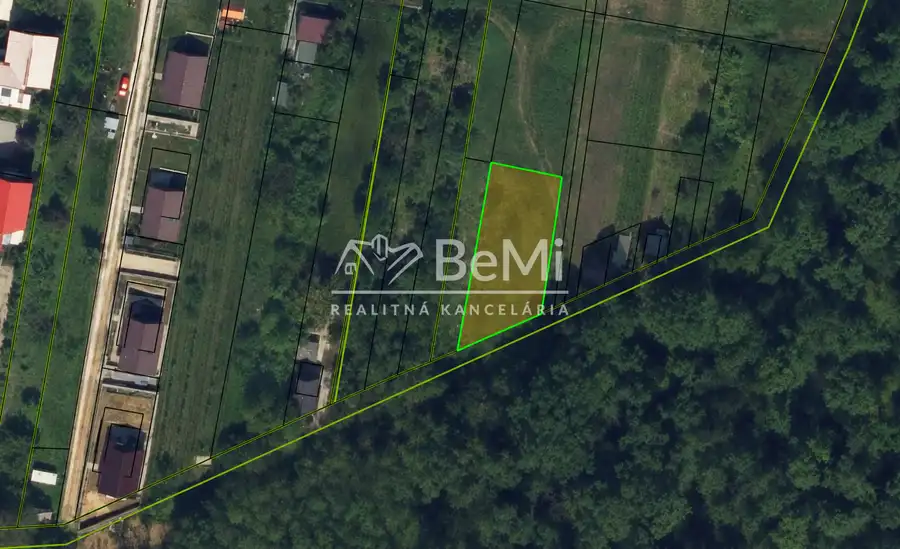
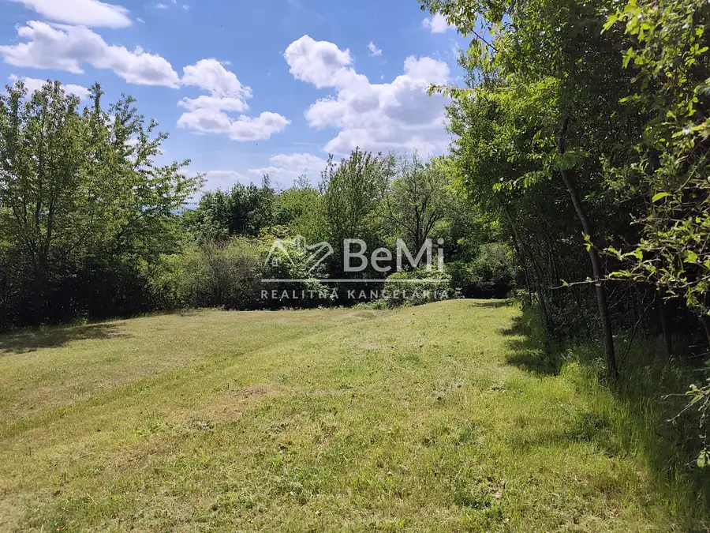
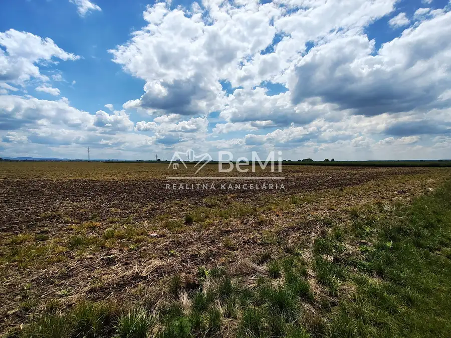
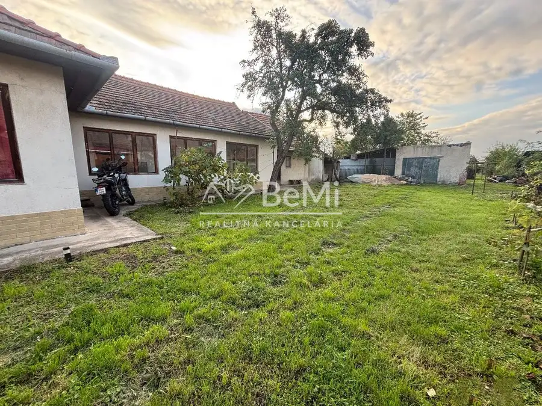

Predaj, investičný pozemok 686 m² - Podhájska (053-14-SIHA)
Podhájska

- VlastníctvoOsobné
O nehnuteľnosti
Ponúkame na predaj pozemok s výmerou 686 m² v obľúbenej turistickej lokalite Podhájska, známej najmä vďaka vyhľadávanému termálnemu kúpalisku, ktoré priťahuje návštevníkov zo Slovenska aj zo zahraničia.Atraktívna poloha ponúka zaujímavý potenciál pre investorov, ktorí hľadajú pozemok na dlhodobé zhodnotenie, budúce využitie alebo realizáciu vlastného investičného zámeru.🌊 PODHÁJSKA – TURISTICKY VYHĽADÁVANÁ LOKALITAPodhájska je známa svojím termálnym kúpaliskom a rekreačným charakterom. Lokalita môže byť zaujímavá pre investorov so záujmom o budúce podnikateľské alebo rekreačné využitie pozemku, napríklad v oblasti apartmánového či ubytovacieho projektu, v závislosti od platných podmienok využitia územia.HLAVNÉ VÝHODY✔️ Výmera pozemku 686 m²✔️ Atraktívna lokalita v Podhájskej✔️ Blízkosť vyhľadávaného termálneho kúpaliska✔️ Zaujímavý potenciál pre dlhodobú investíciu✔️ Možnosť zakúpenia jedného pozemku, viacerých pozemkov alebo celého súboru✔️ Vhodné pre investorov a záujemcov o budúce využitie pozemku🏘️ MOŽNOSŤ KÚPY VIACERÝCH POZEMKOVV ponuke je celkovo sedem pozemkov. Pozemky je možné zakúpiť jednotlivo, vo väčšom počte alebo ako celok.Táto možnosť môže byť zaujímavá najmä pre investorov a developerov, ktorí hľadajú väčší pozemkový celok na budúce zhodnotenie alebo realizáciu vlastného investičného zámeru.💶 Cena: 25 999€📞 Kontakt:Simona Hajduová0902 773 772 📱✉️ hajduova@realitybemi.sk
Parametre
- Druh
- Pozemok pre rodinné domy
- Dátum zverejnenia
- 28. 06. 2026
- Plocha pozemku
- 0 m²
- Typ
- Predaj
- Vlastníctvo
- Osobné
Kde to je


Mohlo by Vás zaujímať

PozemokNové 3 500 €Predaj, rekreačný pozemok - Pukanec / Štiavnické vrchy (015-14-SIHA) Pukanec 401 m²
PozemokNové 22 480 €Predaj, poľnohospodársky pozemok - Šárovce (022-14-SIHA) Šarovce
DomNové 155 900 €Predaj, rodinný dom s pozemkom 3053 m² - Malé Kozmálovce (010-12-SIHA) Malé Kozmálovce